Task attempt: one partition on one executor thread
component index | Lifecycle guide
A logical task says which stage partition to compute. An attempt is one scheduled execution of it. Its TaskInfo lives on the driver; its TaskRunner, deserialized Task and thread-local TaskContext live in the executor JVM. A retry or speculative copy gets a new attempt ID (TID), not a new partition or necessarily a new container. This page follows an ordinary, non-barrier batch stage.
Flow at a glance
- Scheduler: Launch a speculative copy of a slow partition task.
- Winning attempt: Deliver the first result the driver accepts.
- Task set manager: Ask the executor to kill the other copy.
Watch for: The copies have different attempt IDs. A late result from the losing copy is treated as killed, not as a second success.
Show the animated flow

From offer to result
- Assign. The driver's
TaskSetManager picks a task index for an executor, allocates a SparkContext-unique TID and takes the next attempt number for that index (first is 0). TaskDescription carries both the index in the task set and the RDD partition ID, as well as the TID, attempt number, executor ID, artifacts, properties, CPU/resource assignments and serialized Task. Assignment / Envelope
- Start a runner. The backend decodes the description, not user code.
Executor.launchTask records a runner and submits it to the worker pool. The runner selects its class loader, creates a per-attempt TaskMemoryManager, names the thread and reports RUNNING before fetching dependencies and deserializing the task. A running attempt may therefore still be loading a jar. Runner startup
- Enter the task. The runner applies versioned credentials and dependencies, deserializes the
Task, attaches properties and memory manager, checks for a pending kill, and updates the executor's map-output tracker epoch. Task.run registers the TID with the block manager and installs a TaskContextImpl with stage/stage-attempt/partition IDs, attempt number, metrics, CPUs and resources. It runs the task under failure and completion listeners. Preparation / Context / Listeners
- Compute.
ResultTask.runTask decodes the broadcast RDD and function and calls the function on this partition's iterator. ShuffleMapTask.runTask decodes the RDD and shuffle dependency, writes the iterator through the shuffle writer and returns MapStatus metadata, not the shuffle blocks. Only a Python execution path needs a Python worker; the surrounding attempt and its scheduler identity remain JVM-side. Result task / Shuffle map task
- Clean up and report.
Task.run releases unroll memory and unsets thread-local context. The runner releases remaining block locks and cleans up managed allocations. On normal return it checks for a late kill, serializes the value, collects accumulators/metric peaks, and chooses the direct, indirect or oversized-result path. It marks itself finished, clears interrupt status, notifies waiters and sends FINISHED. Its outer finally removes the TID from runningTasks, updates the metrics poller if tracking started, and releases any isolated session reference. Cleanup around execution / Result report / Runner teardown
Cancellation, failure and ownership
State diagram · Open full sizeText equivalent
stateDiagram-v2
[*] --> Assigned
Assigned --> Running: Runner reports RUNNING
Running --> Finished: Result bytes or block reference
Running --> Killed: Kill observed or commit denied
Running --> Failed: Exception or shuffle fetch failure
Finished --> [*]
Killed --> [*]
Failed --> [*]These are the usual runner reports, not a promise that every attempt delivers one. A killed JVM cannot send its final update. Conversely, FINISHED says the executor prepared a result, not that the driver accepted it.
- Cancellation:
killTask records a kill mark even if launch has not yet installed the runner. Once running, the runner retains the reason; the task marks its context interrupted and may interrupt the thread if requested and safe. Uninterruptible sections can defer it. TaskKilled and a denied commit are reported as KILLED, not ordinary application exceptions. Kill handling / Reason mapping
- Failure: A recorded shuffle fetch failure, even when wrapped by user code and rethrown as a nonfatal error, is reported as
FAILED with FetchFailed. The driver can invalidate the missing map output and reschedule stages. An ordinary thrown exception is normally FAILED with ExceptionFailure; the live task set, not the runner, applies its retry budget. Fatal errors can reach the executor's uncaught-exception handler. Failure reports / Retry policy
- Competing attempts: The driver tracks success per task index. When one copy succeeds, the task set asks the backend to kill other running copies; a late successful report from a copy already marked as the loser is handled as killed. Speculation race
Diagnostic clue: Correlate the TID from the driver's Starting task line with Running or Exception in ... in that executor's container log. The same partition with different TIDs is evidence of multiple attempts; the same stage ID with a different stage-attempt number indicates a stage retry. Treat a lost task-result block after FINISHED differently from a shuffle fetch failure during computation.